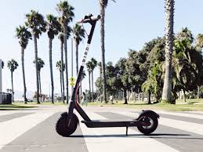

Austin, Texas Dockless Vehicle Study
Toggle navigation
Project Members: Petros Paterakis, Michael Alrafati, Mounica Pokala, Amro Elhag, Becky Bobba
Visualization
Ride vs Weather
Ride vs Weather Desciption
Scooter Usage Per Day
Trip vs Time
Trip Map
The purpose of this project was to analyze how Scooters ride vs weather conditions, Maximum scooter rides vs area, Scooter rides per hour vs weather descriptions, and the Scooters usage per day.
To accomplish this analysis, we first pulled data from the City of Austin Dockless Vehicle Trips and Open Weather Map API to assemble a dataset.
Cleaned up the data using pandas and loaded it into Sql Database. Using Flask, SqlAlchemy and Javascript we did analysis of dockless scooter data and Visualized using Plotly, Leaflet and Tableau.
Programming languages:
Python and Python libraries like Pandas, numpy, Datetime, SqlAlchemy, Flask, Json
Javascript, D3.js, Sql Database, HTML, CSS, Leaflet
Tools:
Jupyter notebook, Visual studio code, Tableau, MySql

Reference
City Of austin
worldweatheronline